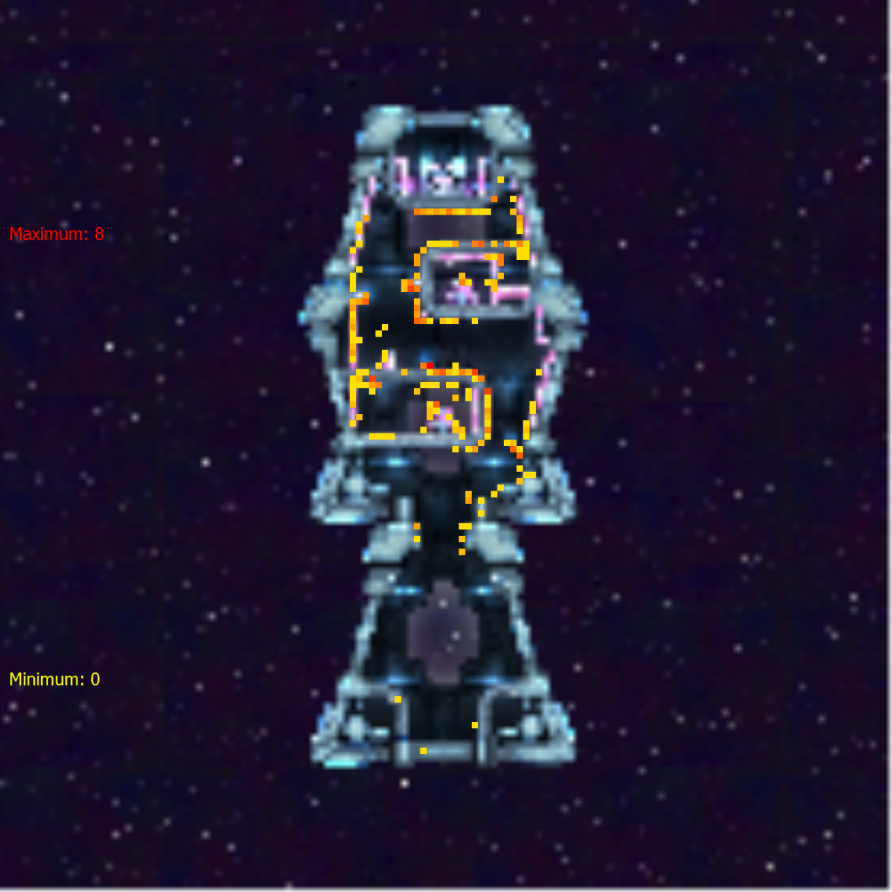
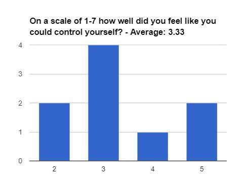

So, over the past week, I’ve been mainly organizing all the research and data into relevant insights. As of right now, we have completed four research / testing sessions. The first two of which, have been user groups, collecting mostly qualitative feedback, although thanks to our tools programmer, we also have access to detailed heatmaps of the levels.
Check this one out:
This is the position of every splat or place a tentacle touched in what is currently level 4 - ‘Lava Lamp’. From this we can see common strategies, as well as where some players may have experienced more difficulty than others. Cross referencing this heat map with the deaths, or thrusts of the level, and we can tell that the middle horizontal hallway is where most players have trouble.
This is only part of the attitudinal / behavioral feedback we have collected. This past week we decided to start using Google Forms again to collect responses.
Although this was from a small sample size, it still gives us an insight into our controls being below average. Upon cross referencing this data with reliable comments from our user group sessions, plus other data results, like overall enjoyment, difficulty, and our most important rating, ‘squid feel,’ I found that overall, players thought that the game made sense, but without a proper tutorial they are missing vital knowledge that would help them complete levels. In addition, the responsiveness of the controls is detracting from the tight mechanics the game emphasizes.
I’ve already written up some recommendations about how to address these problems. Last test session, we decided to A/B test two different control schemes, (as tentacles were used with the Q and E buttons), I thought it would make more sense for tentacles to be mapped to the left and right mouse buttons, as they are aimed and controlled with the mouse position. We adjusted the control scheme and I am proud to report that players felt they could control the squid better, with the mouse controls. This in turn bumps the average of the control stat displayed above by 9%. A good start for a quick change, but there is still lots more to do.
I am incredibly excited about the changes to come, and the data to be yielded!
Thanks for reading! Connect with us on Twitter, Facebook, or YouTube. To make sure you stay up to date, sign up for our email list!